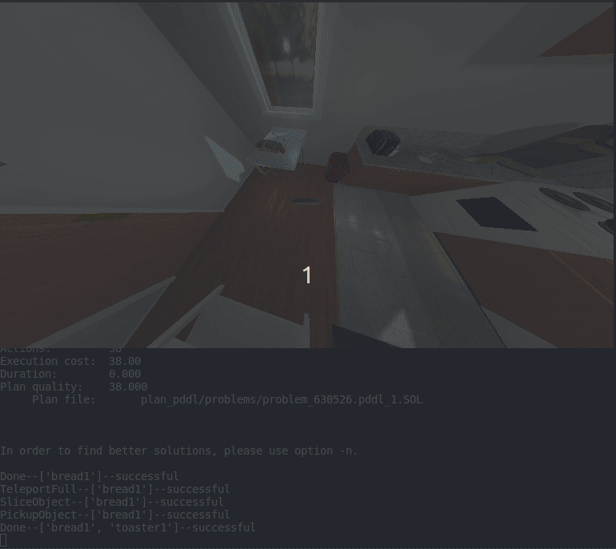
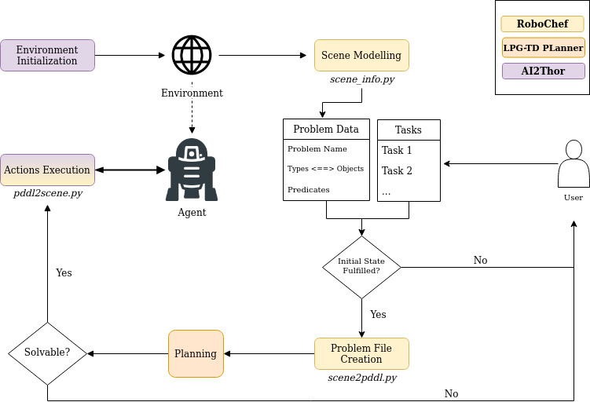

Model-based planning is a prominent aspect of artificial intelligence these days, where robots are taking place in more and more daily jobs in which required abstract reasoning in order to function logically and efficiently as much as possible.
Therefore, agent/s environments usually utilize task and motion planning
prior to executing a set of actions, depending on the world and the constraints that are present. One possible example of a daily job environment is the kitchen. One has to plan his set of actions in order to accomplish a task (cooking, washing dishes, heating, setting a tabe, etc.).
RoboChef combines techniques AI planning enigine and the
AI2Thor
(© The Allen Institute for AI) simulation environement with the aim of simply and efficiently execute a task in the kitchen by planning in advance. The robot’s main task is to move around different kinds of foods and tools, interact with them in the manner of cooking, toggling, cleaning etc., and possiblly serve them.
The code is mainly written in Python, and contains several parts in PDDL. This projects integrates knowledge and functionality from different fields as planning, templating engines, high-level programming and scripting in order to create a flow in the process of planning and execution.

This section describes what was needed in order to create an interface between AI2THOR and a generic PDDL planner, wrapping up the python modules with the template engine and planner functionalities.
I assumed that the environment is fully observable with the aim of completing tasks that involve moving or chainging the states of objects, as well as using objects with other objects that yields some kind of interactions, such as cooking eggs and making coffee, serving them on a table, etc.
Modelling the environment (PDDL domain) required object arrangement in a hierarchical manner (cookware, surfaces, receptacles, etc.). This step was crucial since each object could be applied in a differnet way, thus our planner should consider the applicable manner of using the objects. This process of defining the types and predicates intended to be interchangeable with the types and states of the AI2THOR simulation environment.
As a test, sample plan of making simple breakfast was successfully created and solved (as can be seen in the image below).
PDDL domain and problem samples are in the directory pddl in the root.
Moving on to plan on an actual scene, there should be a mechanism that fetches the environment information and transforms it to a problem file in the strict format of PDDL. Therefore, many python code lines were written to enable quality generation of a PDDL problem file, based on what we know about the environment (this is encapsuled by ‘metadata’ of the ai2thor framework).
The concept of implementation focused on maintaining an individual knowledge base that contains tasks which encapsule objects and predicates of our concern (as this would be very confusing and complex to hold the state of a lamp when we need to make breakfast).
Prior to creating a problem file, it is mandatory to make some verifications of our tasks (what we ask the agent to do) based on our current knowledge about the environment. This process runs some checks in the simulation enviroment to check if all the initial conditions that are required to initiate the task are fulfilled. If there’s some problem, the user is notified about it. On the same occasion, all true predicates are stored for future use since they should be considered as well by the agent in the planning process.
Implementation of the pythonic scene model is found in
scene_info.py
.
The knowledgebase definition is found in
problem.py
.
Having completed all background checks, it is time to proceed to problem file generation.
De facto problem file generation occurs using the open-source template engine
Jinja2
(© Pallets) that parses raw data from the simulation environement into a template of a PDDL problem file. The engine takes into account all relevant data for the planning procedure.
The translation from scene model to PDDL problem file occurs in scene2pddl.py .
The next step was using a planner to be used during program execution. Unfortunately, due to limited compatability of planners with newer development environments, I’ve decided to stick with LPG-TD planner, that is an extention of LPG planner (Gereveni, Saetti & Serina) which can handle most of the features of PDDL 2.2 and can run on a modern Linux machine. LPG-TD supports most features of classic and temporal planning. Planners commonly yield plan files which specify the chain of actions (and possibly their cost and duration) until the goal is reached. Robochef implements a dispatcher that maps each PDDL action to AI2THOR action/s. This is a simple mapping that takes the name of the action and matches the relevant method (sometimes written manually), as this process is iterative until we reach the last action. However, a theoretical axtion execution doesn’t always apply to a physical simulation, mostly due to lack of visibily or to obscurity of objects. For this reason, I’ve decided to implement robot movement as teleportation (supported by AI2THOR API) to an interactable spot with objects, such that the agent will have no obstacles that he couldnwt expect in the planning phase. The decision not to incorporate a moition planner obviously degrades the value of the planner, but it posed many other challenges in the agent pose and movement that could not be solved easily with the simulation environment.
The implementation of action dispatcher and planner integration is found in problem.py and pddl2scene.py .

First, a
Colab notebook
has been written in order to reproduce a useful demonstartion of RoboChef.
the notebook, which can be run on any machine that’s connected to the web, can be found
here
here. If you’d like to modify or test different use cases in the code, please follow the next sections.
| Component | Requirement |
|---|---|
| OS | Ubuntu 14.04+ |
| Graphics Card | DX9 (shader model 3.0) or DX11 with feature level 9.3 capabilities. |
| CPU | SSE2 instruction set support |
| Pyhton Version | 3.5+ |
Simply install the following packages:
AI2THOR
pip install ai2thor
or
conda install -c conda-forge ai2thor
Jinja2
pip install Jinja2
Finally, clone the project folder to a local directory:
git clone https://github.com/roymatza/Robochef
Initializing AI2Thor Controller
Create an AI2Thor controller to activate the environment:
from ai2thor.controller import Controller
controller = Controller(
agentMode="default",
visibilityDistance = 1.5,
scene=rand_scene,
# step sizes
gridSize=0.25,
snapToGrid=True,
rotateStepDegrees=90,
# image modalities
renderDepthImage=False,
renderInstanceSegmentation=False,
branch="main",
#camera properties
width=768,
height=432,
fieldOfView=140)
The above parameters are tweakable - More information can be found on iThor documentation online iThor documentation online.
Note: It is crucial to specify “branch” parameter as “main” due to version compatability issues.
Choose tasks and create a Problem instance
The next step would be choosing the tasks that the agent has to perform as one input, and the scene (controller) previously initialized as the other input. The following modules need to be imported:
from problem import Problem
from tasks import ClearDishes, SliceTomato, MakeToast, ServeCoffee, CookEgg, SetTable
The tasks should be contained when initiaized in a list, for example:
tasks = [MakeToast(), CookEgg()]
Then the problem instance will be created:
problem = Problem(controller, tasks)
Choose PDDL files and a planner to solve the problem
PDDL domain and problem files, as well as the planner could be in any directory that should be specified in the code, for example:
domain_filename = "pddl/robochef.pddl"
problems_path = "pddl/problems"
planner_path = "planners/LPG-td-1.4/lpg-td"
Next, 2 classes are imported to enable the interface between RoboChef and AI2Thor. SceneHandler Takes the problem instace and ranslates it to PDDL, preceded by PlanHandler that is responsible for action dispaching according to the plan produced by the planner. Note that Action class is used in order to enable executing actions in the scene on by one.
Here is an example snippet for execution of all the action in a plan, until the last action is performed:
from pddl2scene import PlanHandler
from scene2pddl import SceneHandler
#generate a PDDL problem file
problem_filename = SceneHandler(problem).ToPDDL(problems_path)
#use planner to get a solution
plan_filepath, l_from, l_to = SceneHandler.Plan(planner_path, domain_filename, problem_filename)
plan_handler = PlanHandler(plan_filepath, problem, l_from, l_to)
#execute actions
for i in range(max_actions):
action = plan_handler.parse_line()
if action is not None:
event = action.execute()
sleep(0.5)
if event is not None:
Problem.PrintLastActionStatus(event, action.args)
if not event.metadata["lastActionSuccess"]:
problem.controller.step('Pass')
input("Mission failed! Press Enter to continue...")
break
else:
problem.controller.step('Pass')
input("Mission finished! Press Enter to continue...")
break
(Optional) Create your own tasks
I is possible to extend
Task
class to support additional tasks to perform. Task definition in RoboChef is similar to that of a PDDL problem. It can by done adding code to
tasks.py
file in the following protocol:
class NewTask(Task):
def __init__(self) -> None:
super().__init__(
name = "", #Name of the task
types = [], #Types that are recognized in AI2Thor, such as "cucumber", "countertop", "coffeemachine"...
#Initial/goal predicates, whose name appears in predicates.py - should be in the format "[not] pred_name type1 type2 ...", e.g. "not has_coffee mug", "on mug table"
init_predicates=[],
goal_predicates=[])
It is recommended to use playground.py for a start when modifying the code, otherwise simply create a python file in the the project folder.
There is much effort involved in creating a robust planning framework for real-life situations. A physical environment imposes uncertainties, while interacting with objects requires itself planning, along the high-level task planning and motion planning. Working on the project has been a great practical exploration in the world of planning and robotics, which was an enjoyable experience for me. I hope that despite the drawbacks in the implementation you’d find it useful.
D. McDermott et al. (1998), PDDL-the planning domain definition language
M. Fox, D. Long (2003), PDDL2.1 : An Extension to pddl for Expressing Temporal Planning Domains